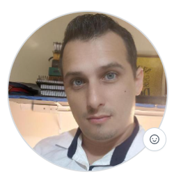

Gustavo Saffir

Resumo
Sou um pessoa tranquila e muito dedicada a tudo que me proponho a fazer, estou iniciando minha jornada por agora. Tenho experiência em atendimento ao público e manipulação de dados estatísticos.
Educação
Estou estudando minha graduação em Engenharia de Software pela Universidade Veiga de Almeida/RJ e em paralelo realiazando meu Bootcamp junto a Dra. Angela pela Udemy. Para melhorar minha capacitação também estou realizando um curso de Inglês pela CNA.
Experiência de Trabalho
- Entrevistador / Assistente de Qualidade / Supervisor de MediaMix - Kantar IBOPE Media
Maio de 2006 - Abril de 2018
- Como Entrevistador realizava entrevistas de porta a porta ou pelo telefone em busca de saber quais emissoras de rádios, jornais mais lidos. E eventualmente identificação de padrões extras, como consumo de alimentos e internet.
- Realizava viagens por todo Brasil, realizando identificando os hábitos das pessoas.
- Fui promovido a assistente de qualidade, aonde verificava todas as entrevistas dos "entrevistadores", como promovia treinamentos em campo de novos colaboradores
- Fui promovido novamente e me tornei Supervisor de Equipe, aonde liderava uma equipe de Entrevistadores e Assistente de Qualidade, aonde recebi aumento salarial por Mérito. Ao elevar a minha filial de 12º segundo lugar à 2º lugar do Brasil.
- Neste último cargo, tive experiência com gestao de dados, cruzamentos estatísticos, criei um painel gerencial em planilha aonde conseguia identificar rapidamente todas as métricas de audiência e evolução de cada colaborador
- Entrevistador FootPrint - Google
Maio de 2014 - Julho de 2014
- Neste projeto, realizamos a entrevista e inserção de cada ponto comercial dentro do sistema de Google Maps.
- O projeto tinha uma previsão de 6 meses, mas com o dinamismo da equipe, conseguimos terminar em 3 meses o projeto em Vitória/ES
- Motorista Uber/Mercado Livre
Março de 2019 - Presente data
- Na empresa Uber, realizo o transfer de pessoas de um ponto a outro da cidade.
- Na empresa MercadoLivre, realizo a entrega de encomendas do seu MarketPlace
Habilidades
- Antendimento ao cliente: ⭐️⭐️⭐️⭐️⭐️
- Pacote Office: ⭐️⭐️⭐️⭐️
- Gestão de Equipe: ⭐️⭐️⭐️⭐️⭐️
- Conhecimento HTML: ⭐️⭐️⭐️⭐️
- Lingua Inglesa: ⭐️
- Agilidade e Proeficiencia: ⭐️⭐️⭐️⭐️⭐️
Prêmios e Certificações
- Funcionário do Mês - Kantar IBOPE Media (janeiro de 2018)
Outros